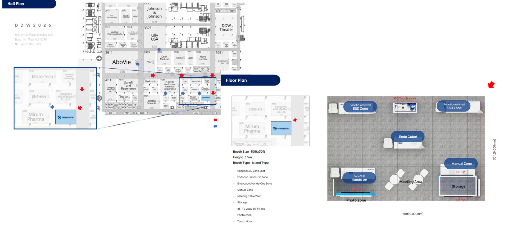
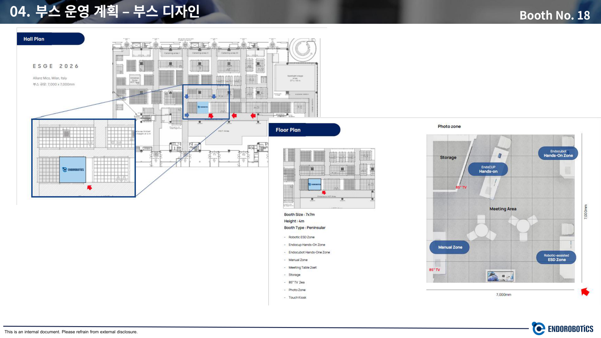
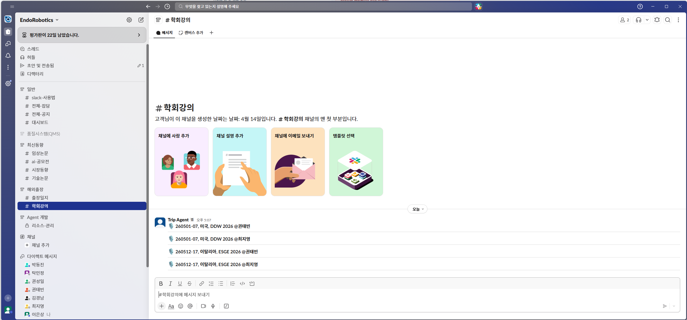
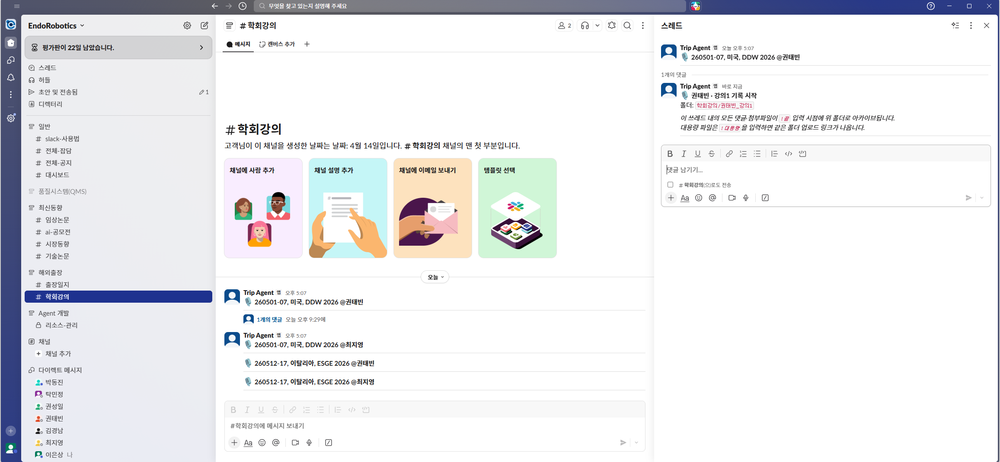
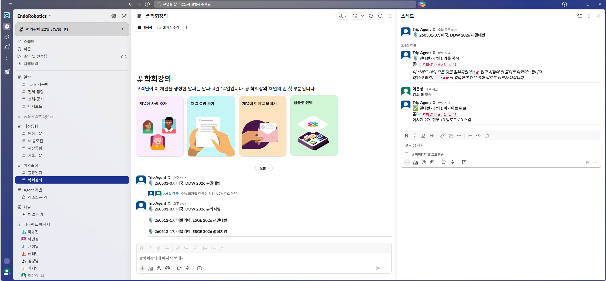

DDW 2026 · ESGE 2026
출장 대시보드
Chicago(5/2–5)와 Milan(5/14–16) 출장에 필요한 Tool 셋업·개인 준비·제품·KOL·학회 정보를 한 곳에 정리했습니다. 아래 탭에서 필요한 주제를 선택하세요.
260501-07260512-171전체 일정
2026년 5월, DDW 2026 (Chicago) → ESGE Days 2026 (Milan) 연속 출장입니다. 한국 출발(5/1)부터 마지막 귀국(5/19)까지 약 3주의 일정이며, 인원에 따라 DDW만 / ESGE만 / 두 학회 모두 참가가 나뉩니다.
연속 출장 타임라인
- 5/1(금) 한국 출발 → 시카고 도착 (KE037 · 김경남·장은진은 DL0158)
- 5/2(토) 사전점검 · 올림푸스 교육
- 5/3–5(일–화) 전시 3일차
- 5/6(수) 8명 귀국 / 2명 유럽 직행 (김경남·장은진) / 2명 5/9 별도 귀국 (이창준·유재형)
- 5/6 → 5/12 귀국자 재정비 · 후발팀 합류
- 5/6 → 5/12 김경남·장은진 미국→유럽 직행
- 5/12(화) 후발팀 OZ0581 (ICN 13:45 → MXP 20:00)
- 5/12(화) 밀라노 도착 · 호텔 체크인
- 5/13(수) 사전점검 · 부스 셋업
- 5/14–16(목–토) 전시 3일차
- 5/17(일) 6명 귀국 / 5/19(화) 4명 귀국
부스 위치 & 레이아웃


- 1RESD 핸즈온 #1
- 2RESD 핸즈온 #2
- 3EndoCubot 핸즈온
- 4EndoCup 이벤트
- 5Manual Zone
- 1RESD 핸즈온
- 2EndoCubot 핸즈온
- 3EndoCup 이벤트
- 4Manual Zone
출장자 · 역할 매트릭스
| 이름 | DDW 2026 역할 | ESGE 2026 역할 |
|---|---|---|
| 김병곤 대표 | Overall | — |
| 김경남 | Olympus 부스 지원Olympus Private Meeting | Overall |
| 권태빈 | Lecture & Poster | Lecture & Poster |
| 김한나 | Overall | Overall |
| 장은진 | Olympus 부스 지원Back Room | Overall |
| 김정한 | Olympus 부스 지원Back Room | RESD 핸즈온 |
| 이은상 | EndoCup 이벤트 | EndoCup 이벤트 |
| 민병두 | EndoCubot 핸즈온 | EndoCubot 핸즈온Simulator Rally 3.0 |
| 최지영 | Lecture & Poster | Lecture & Poster |
| 안현석 | RESD 핸즈온 Badge Scanner | RESD 핸즈온 |
| 이창준 | RESD 핸즈온 | — |
| 유재형 | Manual Zone Badge Scanner | — |
| 에르헤스 | — | Manual Zone |
※ 김경남·장은진은 DDW 종료 후(5/6) 한국 경유 없이 미국→유럽 직행. 이창준·유재형은 5/9(토) 별도 귀국편 (ORD DL1544 → ICN KE5034).
세부 일정
파란 배경은 전시일(Exhibit Day)입니다.
DDW 2026 데일리 스케쥴 (Chicago · Booth No. 5046)
| 날짜 | 시간 | 일정 |
|---|---|---|
5/1(금) 이동 + 도착 | 07:30 | 인천공항 2터미널 집결 (3시간 전, 수화물 수속) |
| 10:15 | DL0158 출발 (김경남·장은진) | |
| 10:40 | KE037 출발 (10명, 13시간) | |
| 09:40 | 시카고 ORD 도착 · Pick-up Service (SUV + Van) | |
| 11:30 | Congress Plaza Hotel 체크인 · 12:30 점심 (도보 5분) | |
| 18:30 | 저녁 | |
5/2(토) 사전점검 · 부스 셋업 Hall 08:00–16:30 | 10:00 | 호텔 로비 집결 · 핸드캐리 장비 수급 |
| 10:05 | McCormick Place West 1층 Room 183 (등록 · 배지 픽업) | |
| 13:00 | 점심 배달 (딜리버리 푸드) | |
| 13:30 | 올림푸스 교육 (김경남 · 김정한 · 장은진) | |
| 16:30 | 부스 점검 · 교육 종료 | |
| 18:30 | Shaw's Crab House — Olympus Team 저녁 (5명: 김병곤·김경남·권태빈·장은진·김한나) | |
| 20:30 | Day 1 Wrap-up | |
5/3(일) 전시 1일차 담당자 07:00~18:00 | 08:30 | 호텔 로비 집결 · 이동 |
| 09:30–16:00 | 전시 OPEN | |
| 13:00 | 점심 배달 — CM Korean Fried Chicken / Ahjoomah's Apron (한식) | |
| 18:00 | 저녁 | |
| 20:30 | Day 2 Wrap-up | |
5/4(월) 전시 2일차 담당자 07:00~18:00 | 08:30 | 호텔 로비 집결 · 이동 |
| 09:30–16:00 | 전시 OPEN | |
| 13:00 | 점심 배달 | |
| 18:00 | 저녁 | |
| 20:30 | Day 3 Wrap-up | |
5/5(화) 전시 3일차 담당자 07:00~18:00 | 08:30 | 호텔 로비 집결 · 이동 |
| 09:30–16:00 | 전시 OPEN · 16:00 이후 패킹 · Wrap-up | |
| 10:00 | Dr. Irving Waxman 방문 · Freeman Service Center (BOL & MHA 작성) | |
| 13:00 | 점심 배달 | |
| 18:00 | 저녁 (Steak House 예약 중) | |
5/6(수) 귀국 1차 (8명) | 09:00 | 호텔 집결 · Pick-up Service |
| 09:40 | ORD 도착 · 출입국 수속 | |
| 12:20 | KE038 출발 (14h30m) · 김경남·장은진은 유럽 직행 / 이창준·유재형 5/9 별도 귀국 | |
5/7(목) 한국 도착 | 16:50 | 인천공항 2터미널 도착 |
ESGE Days 2026 데일리 스케쥴 (Milan · Booth No. 18)
| 날짜 | 시간 | 일정 |
|---|---|---|
5/12(화) 이동 | 10:30 | 인천공항 2터미널 집결 |
| 13:45 | OZ0581 출발 (13h20m) | |
| 20:00 | MXP 도착 · Pick-up 20:40 (이은상·안현석은 13:20 조기 도착) | |
| 21:30 | Melia Milano 체크인 | |
| ※ 김경남·장은진은 DDW에서 직행 합류 | ||
5/13(수) 사전점검 · 부스 셋업 Hall 08:00–20:00 Industry 15:00–20:00 | 11:00 | Allianz MiCo Gate 8 학회장 도착 |
| 11:10 | 배지 · 스캐너 픽업 | |
| 11:15 | Booth No. 18 사전점검 | |
| 13:00 | 점심 배달 | |
| 17:00 | 부스 점검 종료 · 저녁 | |
| 20:30 | Day 1 Wrap-up | |
5/14(목) 전시 1일차 Industry 07:00–17:30 | 07:45 | 호텔 로비 집결 · 이동 |
| 08:00 | 부스 셋팅 | |
| 09:00–17:00 | 전시 OPEN | |
| 13:00 | 점심 (학회장 제공 런치 or 배달) | |
| 18:00 | 저녁 | |
| 20:30 | Day 2 Wrap-up | |
5/15(금) 전시 2일차 Industry 08:00–18:00 | 07:45 | 호텔 로비 집결 · 이동 |
| 08:00 | 부스 셋팅 | |
| 09:00–17:30 | 전시 OPEN | |
| 13:00 | 점심 | |
| 18:00 | 저녁 | |
| 20:30 | Day 3 Wrap-up | |
5/16(토) 전시 3일차 Industry 08:00–12:30 | 07:45 | 호텔 로비 집결 · 이동 |
| 08:00 | 부스 셋팅 | |
| 08:30–12:30 | 전시 OPEN · 12:30 이후 짐싸기 · Wrap-up | |
| 오후 자유시간 | ||
| 19:00 | Afrodite Osteria 저녁 (10명 예약) | |
5/17(일) 귀국 1차 (6명) | 18:30 | MXP 공항 출발 · 수속 |
| 22:00 | KE0928 출발 (11h35m) — 김경남 · 권태빈 · 장은진 · 에르헤스 · 이은상 · 안현석 | |
5/18(월) 1차 도착 | 16:35 | 인천공항 2터미널 도착 |
5/19(화) 귀국 2차 (4명) | 22:00 | MXP 출발 (OZ) — 김한나 · 민병두 · 김정한 · 최지영 |
5/20(수) 2차 도착 | 16:35 | 인천공항 2터미널 도착 |
숙소 & 이동
520 South Michigan Avenue, Chicago, IL 60605
- • 일정: 5/1(금) ~ 5/6(수), 5박6일
- • Room: 총 7개 · Double Beds · 조식 불포함
- • 공항(ORD) → 호텔: 차로 약 20~25분
- • 호텔 → 학회장(McCormick Place): 차로 약 10분
Via Masaccio, 19, 20149 Milano MI, Italy
- • 일정: 5/12(화) ~ 5/17(일), 5박6일 (후발팀 5/19까지 연장)
- • Room: 총 6개 · Double Beds · 조식 불포함 · 현장 결제
- • 공항(MXP) → 호텔: 차로 약 30~35분
- • 호텔 → 학회장(Allianz MiCo Gate 8): 도보 약 10분
2DDW 2026 · ESGE 2026 학회 안내
DDW 2026 (Digestive Disease Week)
| 일정 | 2026년 5월 2-5일 |
| 장소 | McCormick Place (West Building), 2301 S King Dr, Chicago, IL 60616 |
| 규모 | 13,000+ 전문가 · 400 세션 · 4,300 발표 |
| 주최 | AGA · AASLD · ASGE · SSAT 공동 |
| Exhibit Hall | 5/3–5 · 09:30–16:00 CDT |
| 공항 이동 | O'Hare(ORD) 택시 45분 / Blue Line 50분 Midway(MDW) 택시 25분 / Orange Line 35분 |
| 공식 링크 |
ESGE Days 2026
| 일정 | 5/13 Pre-Congress Course · 5/14–16 본회의 (hybrid, 7/31까지 streaming) |
| 장소 | Allianz MiCo — Milano Convention Centre Piazzale Carlo Magno 1, 20149 Milano |
| 규모 | 3,000+ 유럽 GI 전문가 |
| 호스트 | Humanitas University Medical School, Milan |
| 공항 이동 | Malpensa(MXP) Express 기차 50분 + M1 10분 Linate(LIN) 73번 버스 또는 택시 20분 |
| 공식 링크 |
출장 관련 FAQ
ESTA 신청은 얼마나 걸리나요?
대개 72시간 내 승인. 간혹 더 걸리므로 출국 2주 전 신청 권장. $21.
미국→이탈리아 이동 시 비자는?
Schengen 무비자 90일 적용. ESTA는 미국 입국용이므로 DDW 전 반드시 승인 완료.
1Slack 가입 & 워크스페이스 초대
버튼 클릭 → 회사 이메일 입력 → 이름·비밀번호 설정 → 가입 완료 + 워크스페이스 자동 입장
📩 인증 메일(no-reply@slack.com)이 오면 클릭하여 이메일 확인만 해주세요. 오지 않으면 스팸함 확인 → 그래도 없으면 이은상에게 문의.
2Slack & Dropbox 앱 설치
Slack 데스크톱 앱
Slack 모바일 앱 필수
설치 후 "Sign in" → 가입 이메일 입력 → 인증코드 입력. 알림 허용 필수.
Dropbox 모바일 앱 필수
회사 Dropbox 계정으로 로그인. 계정 없으면 이은상에게 생성 요청.
권장 초기 설정
- 표시 이름을 한글 이름으로 설정 — Slack 프로필 > 프로필 편집 > "표시 이름" 항목을 한글로. 영문 자동 설정 시 가독성 낮음
- 모바일 알림 허용 — iOS/Android 설정에서 Slack 앱 알림 ON. 출장 현장 알림을 놓치지 않음
3Slack 사용법 및 출장기록 남기는 법
3-1. 모든 채널 조인하기
Endorobotics 워크스페이스에는 아래 채널들이 있습니다. 전부 조인해야 팀 공지·자료를 놓치지 않습니다.
| 섹션 | 채널 이름 | 용도 |
|---|---|---|
| 일반 | #slack-사용법 | Slack 자체 FAQ·팁 |
#전체-잡담 | 자유 대화 | |
#전체-공지 | 회사 전체 공지 | |
| 품질시스템(QMS) | 품질·규제 관련 공유 | |
| 최신동향 | #임상논문 | 최신 임상 논문 공유 |
#ai-공모전 | AI 활용 아이디어 모집 | |
#시장동향 | 의료기기 시장·경쟁사 동향 | |
#기술논문 | 기술·엔지니어링 논문 | |
| 해외출장 | #출장일지 ★ 필수 | 출장 중 실시간 기록 |
#학회강의 | 학회 현장 강의 자료·요약 공유 | |
| Agent 개발 | #리소스-관리 🔒 | 제한됨 (조인 불가 시 스킵) |
조인하는 법
- 좌측 사이드바 하단 "+ 채널 추가" 클릭
- "채널 찾아보기(Browse channels)" 선택 → 전체 채널 리스트 표시
- 위 표의 각 채널을 하나씩 클릭 → "참여(Join)" 버튼 클릭

#출장일지가 반드시 보여야 하며, 하단 "채널 추가"는 새 채널 조인·섹션 생성 진입점.3-2. 섹션으로 정리하기 (선택 · 권장)
기본적으로 채널은 일자순으로 나열됩니다. "섹션(Section)"으로 묶으면 사이드바가 위 스크린샷처럼 깔끔해집니다.
- 사이드바 어떤 채널이든 오른쪽 클릭 (모바일: 길게 누르기) → "섹션으로 이동" → "새 섹션 만들기"
- 권장 섹션 이름:
일반·품질시스템(QMS)·최신동향·해외출장·Agent 개발 - 각 채널을 해당 섹션으로 드래그 앤 드롭하여 정리
- 섹션 이름 옆 화살표(▸)로 접었다 펴기 가능
3-3. 출장 기록 남기기
📱 모바일 앱에서도 동일하게 동작합니다. 아래 스크린샷은 데스크톱 화면이지만, 위치·동작·명령어는 모바일에서도 같습니다.
출장 기록은 전부 #출장일지 채널 안에서 진행합니다.
명령어는 반드시 출장 쓰레드(댓글창) 안에서만 동작합니다. 채널 본문(root)에 쓰면 무시됩니다.
Step 1. #출장일지 채널 입장
좌측 사이드바 해외출장 섹션 → #출장일지 클릭. 봇(Trip Agent)이 올려둔 출장 제목 메시지들이 보입니다.

260501-07, 미국, DDW 2026)을 찾으세요.Step 2. 해당 메시지에 마우스를 올려 쓰레드 열기
메시지 위로 마우스를 가져가면 오른쪽에 아이콘들이 뜹니다. 말풍선 모양(스레드의 댓글)을 클릭하면 오른쪽에 쓰레드 패널이 열립니다.
Step 3. 쓰레드에 본인 기록 남기기
우측 패널의 "댓글 남기기..."에 텍스트·사진·영상을 올리세요.

Step 4. 대용량 영상 업로드 — !대용량
1GB 넘는 영상(수술 녹화·강의 풀영상 등)은 댓글란에 !대용량 을 단독으로 입력해 전송합니다. 봇이 "드랍박스 앱 열기" 링크를 답장합니다.

+ 버튼으로 파일 업로드. 폰 잠그거나 앱 전환해도 백그라운드 업로드가 지속됩니다.Step 5. 하루 마무리 — !아카이브
저녁 피드백 미팅 직전에 같은 쓰레드에 !아카이브를 입력합니다. 쓰레드 전체 댓글이 messages.md로, 첨부 파일이 Day N 폴더로 동기화됩니다.

!아카이브만 단독으로 입력 후 전송. 여러 번 실행해도 중복 없이 안전합니다.- 현장에서 10초 안에 올리기
- 사진엔 한 줄 설명 추가
- "Saito 선생님이 말하길..." 출처 명시
- 본인 관점도 한 줄 덧붙이기
- 개인 DM으로 메모 (팀이 못 봄)
- "!대용량 부탁해요" (단독으로만)
- 채널 root에서 명령어
- "나중에 정리하지"
3-4. 학회 강의 기록 남기는 법
강의 기록은 #학회강의 채널에서 진행합니다.
청자 1명 = 쓰레드 1개가 출장마다 미리 준비되어 있고
(예: 260501-07, 미국, DDW 2026 @권태빈),
본인 이름이 붙은 쓰레드 안에서 강의별로 !시작 ~ !끝 을 감싸는 방식으로 기록합니다.
명령어는 반드시 쓰레드 댓글창에서만 동작합니다.
Step 1. #학회강의 채널 입장 후 본인 이름이 붙은 쓰레드 찾기
좌측 사이드바 해외출장 섹션 → #학회강의 클릭. Trip Agent 봇이 올려둔 쓰레드 중 본인 이름(@이름)이 붙은 메시지를 찾아 말풍선 아이콘을 클릭해 쓰레드를 엽니다.

260501-07, 미국, DDW 2026 @권태빈)에서만 작업합니다.Step 2. 강의 시작 — !시작
강의가 시작되는 시점에 쓰레드 댓글창에 !시작을 단독으로 입력·전송합니다. 봇이 드롭박스에 본인 이름 + 회차 번호 폴더를 자동 생성하고, 이 시점부터 !끝 입력 전까지의 모든 내용이 해당 폴더에 모입니다.

학회강의/권태빈_강의1)을 알려줍니다. 이 쓰레드의 모든 댓글·첨부파일이 !끝 입력 시점에 이 폴더로 아카이브됩니다.Step 3. 실시간 기록
강의를 들으며 쓰레드에 자유롭게 메모를 남기고, PPT 사진·짧은 음성 클립 등을 업로드하세요. 출처나 본인 관점도 한 줄 덧붙이면 나중에 보고서 작성 시 유용합니다.
Step 4. 대용량 녹음 파일 업로드 — !대용량 (선택)
녹음 파일이 1GB를 넘거나 풀영상을 올려야 할 때, 쓰레드에 !대용량을 입력하면 봇이 해당 강의 폴더로 바로 이어지는 드롭박스 앱 링크를 답장합니다. 폰에서 탭 → 앱에서 백그라운드 업로드. (1GB 이하 파일은 슬랙에 그냥 첨부하면 자동으로 폴더로 옮겨집니다.)
Step 5. 강의 종료 — !끝
강의가 끝나면 쓰레드에 !끝을 단독으로 입력합니다. !시작~!끝 사이의 모든 댓글·첨부파일이 messages.md + 원본 파일 형태로 강의 폴더에 자동 아카이브됩니다. 이후 같은 쓰레드에 !시작을 다시 입력하면 강의2가 새로 열립니다.

✅ 메시지 개수·첨부 업로드 결과 요약). 이 세 가지가 한 쓰레드 안에서 자연스럽게 이어집니다.260501-07, 미국, DDW 2026/
├── 260501-1st Day/ ← #출장일지 기록
├── 260502-2nd Day/
├── ...
└── 학회강의/
├── 권태빈_강의1/ ← 같은 강의라도 청자별 독립 폴더
├── 권태빈_강의2/
└── 최지영_강의1/
?FAQ
Slack을 한 번도 써본 적이 없어도 괜찮나요?
이 페이지만 따라 하면 10분 안에 시작 가능합니다.
가입 버튼을 눌렀는데 "이 초대는 사용할 수 없습니다" 또는 도메인 오류가 떠요.
초대 링크는 유효기간이 있어 만료됐을 수 있습니다. 이은상에게 새 링크 요청. 또한 반드시 @endorobo.com 회사 이메일로만 가입 가능합니다.
가입 인증 메일이 안 와요.
스팸함 확인 → no-reply@slack.com. 10분 넘어도 안 오면 이은상에게 문의.
출장 중 Slack이 느리면?
모바일 데이터로 전환. 안 되면 !아카이브는 나중에 몰아서 실행해도 OK.
!대용량 링크가 앱으로 안 열려요.
Dropbox 모바일 앱 설치·로그인 확인. 미설치 시 웹으로 열림.
문제 생기면 누구한테?
이은상 매니저 (eunsang.lee@endorobo.com) 또는 Slack DM.
1여권 & 비자
| 항목 | 🇺🇸 미국 | 🇮🇹 이탈리아 |
|---|---|---|
| 비자 | ESTA 필수 | 무비자 (Schengen) |
| 비용 | $21 | 무료 |
| 처리 | 72시간 (2주 전 신청) | — |
| 신청 | esta.cbp.dhs.gov | — |
여권 유효기간 출국일 기준 6개월 이상.
2여행자 보험
회사에서 일괄 가입.
3로밍 서비스
국내 통신사
eSIM
4항공 & 숙박
입국 심사
✈️ 항공편
| 구간 | 편명 | 일자 | 출발 → 도착 |
|---|---|---|---|
| DDW 출발 | KE037 | 5/1(금) | ICN 10:40 → ORD 09:40 |
| DDW 귀국 (8명) | KE038 | 5/6 → 5/7 | ORD 12:20 → ICN 16:50(+1) |
| DDW 귀국 (2명) | DL1544 → KE5034 | 5/9 → 5/10 | ORD 09:30 → ICN 17:20(+1) |
| ESGE 출발 | OZ0581 | 5/12(화) | ICN 13:45 → MXP 20:00 |
| ESGE 귀국 1차 (6명) | KE0928 | 5/17 → 5/18 | MXP 22:00 → ICN 16:35(+1) |
| ESGE 귀국 2차 (4명) | OZ | 5/19 → 5/20 | MXP 22:00 → ICN 16:35(+1) |
🏨 숙박
5콘센트 어댑터
6복장
- 엔도 공용 카라티
- 엔도 공용 바람막이 / 후리스
- 부스 외 비공식 자리: 단정한 비즈니스 캐주얼
1용어·대화 원칙
부스에서 doctors·KOLs와 대화할 때 공통으로 지켜야 할 표현 규칙입니다. 스크립트는 암기보다 요지 파악이 목적이며, 고객 수준에 맞춰 자연스럽게 변형하세요.
일반적으로 approval은 PMA와 연결되고, clearance는 510(k)와 연결됩니다. ROBOPERA는 510(k)로 cleared이므로 반드시 "FDA clearance / FDA-cleared"를 사용해야 합니다.
- • received FDA clearance
- • FDA-cleared
- • has received FDA clearance
- • FDA approved
- • approved by the FDA
- • have FDA approval
공통 대응 원칙
- 가격 문의 → 모든 제품 공통: "Please contact our sales team." + 명함 교환
- 콜라보·연구·공동 스터디 문의 → 마케팅·세일즈 담당자 명함 전달
- 소프트 런칭 참여 / 본인 센터 도입 문의 → 마케팅·세일즈 담당자 명함 전달
- 복잡한 질문 → 명함 교환 후 follow-up 이메일로 약속
- 제품을 직접 손에 쥐어주기 — 설명이 절반으로 짧아짐
2ROBOPERATM
엔도로보틱스의 robotic platform for endoscopic procedures. 현재 TraCloser와 페어링되며, 향후 stitching 제품과도 호환 예정. 2025년 9월 FDA 510(k) cleared.
FDA-cleared · received FDA clearance❌
FDA approved · approved by the FDA · have FDA approval
🎙️ Booth Script (영어 예시)
ROBOPERA is EndoRobotics' robotic platform for endoscopic procedures.
ROBOPERA × TraCloser is a robotic traction platform for ESD, providing stable tissue traction, precise control, and closure support after resection in one seamless workflow.
It helps physicians hold, lift, and stabilize tissue more precisely during procedure.
Currently, it is used with our Robotic Traction Device — TraCloser, and in the future, it is also planned to be compatible with our upcoming stitching product.
This product received FDA clearance in September last year.
There are currently three types of Robotic Traction devices compatible with ROBOPERA. Of these, two types have already received FDA clearance, and the Retractable type with the built-in cap is expected to receive FDA clearance by December this year.
Key Points
- ROBOPERA is EndoRobotics' robotic platform for endoscopic procedures
- Helps physicians hold, lift, and stabilize tissue more precisely
- ROBOPERA × TraCloser supports ESD with traction, precise control, and closure support
- Currently used with TraCloser, our robotic traction device
- Planned to be compatible with our future stitching product
- Received FDA clearance in September last year
- Three ROBOPERA-compatible traction device types — two already FDA-cleared
- Retractable type with built-in cap expected to receive FDA clearance by December this year
FAQ
Q. What is the price of ROBOPERA?
→ 마케팅·세일즈 담당자 또는 명함 전달.
Q. What is the expected timeline for regulatory approval completion?
In the U.S., FDA 510(k) clearance was completed in September last year, and we are currently preparing for CE MDR certification. In Europe, we are targeting approval between late 2026 and Q1 2027. In Japan, we are aiming for approval in the second half of 2027.
Q. Are there any places where this product has already been sold?
The product has already been sold to Korea University Hospital in Korea and in Venezuela. In the U.S., preparations for a soft launch are expected to begin in the first half of the year, followed by full-scale sales starting at the end of this year.
Q. Have any papers been published on this product?
→ 최신 clinical data summary + 논문 QR 안내 (별도 제작 예정).
Q. I'm interested in purchasing the product. How can I proceed?
We are currently in the final stage of completing an exclusive distribution agreement with our global partner. Once the agreement is finalized, a soft launch will be carried out at selected hospitals in the second half of the year, with full-scale sales expected to begin next year. If you leave your contact information, we will forward it to the representative responsible for your region.
3Articulated Basic Gripper G
사람 손과 같은 3가지 동작성(wrist · arm · roll)을 구현한 핵심 robotic traction device. 구두 설명 시 "Alligator" 명칭 사용.
🎙️ Booth Script
This is the Alligator type.
It provides flexible dynamic traction through three articulated movements: wrist, arm, and roll. Because of this wide range of motion, the operator can manipulate tissue more freely and precisely during the procedure.
A major advantage of this type is the wrist function. It allows the user to adjust the grasping angle in a very detailed way, which is particularly helpful in more difficult or hard-to-reach areas.
Also, the forceps has a 21 mm opening width and a 7.3 mm jaw length, so it can securely grasp deeper and wider tissue.
So, if the procedure requires more delicate angle adjustment and strong, stable tissue grasping, this type can be a very effective option.
Key Points & 스펙
- 3가지 articulated movement: wrist · arm · roll
- 사람 손과 같은 동작성 (like human hand)
- Wrist function → grasping angle 미세 조정
- Hard-to-reach 부위에 특히 유용
- Delicate angle adjustment + strong/stable tissue grasping
| Opening width | 21 mm |
| Jaw length | 7.3 mm |
| Articulation | Wrist · Arm · Roll |
| 규제 | FDA-cleared |
4Articulated Dual Gripper G
Traction + closure assistance를 한 device에 담은 multi-functional 2-in-1 solution. 구두 설명 시 "Dual" 명칭 사용.
🎙️ Booth Script
This is the Dual Gripper type.
It is a multi-functional 2-in-1 solution designed to support both traction and closure assistance in a single device. That means it can help maximize procedural efficiency by supporting both dissection and defect closure within one workflow.
A key strength is that it has two independently moving jaws, a central fixed jaw, roll motion, and an 8 mm jaw length. These features are especially helpful for defect approximation because they allow the operator to adjust the tissue more precisely and bring it into a better position for clipping.
Another advantage is that it can support faster and simpler closure with fewer clips. By helping the operator achieve more controlled approximation of the defect, it can also improve the chance of a more complete closure and enhance cost efficiency at the same time.
Key Points & 스펙
- Multi-functional 2-in-1: traction + closure assistance
- Dissection + defect closure in one workflow
- Two independently moving jaws + one central fixed jaw
- Defect approximation에 특히 유용
- Fewer clips — 더 빠르고 단순한 closure + cost efficiency
- More controlled approximation → 완전한 closure 가능성↑
| Jaw 구조 | Independent ×2 + Fixed central ×1 |
| Jaw length | 8 mm |
| Motion | Roll |
| 규제 | FDA-cleared |
FAQ (Alligator & Dual 공통)
Q. What is the price per instrument?
Please contact our sales team for pricing details. Pricing information will be provided by the appropriate sales representative.
Q. Is reuse possible?
No, reuse is not possible. This is a single-use disposable device and must be disposed of after a single use. If a used product is reconnected to the equipment, it is designed not to operate.
Q. Is the device inserted directly when used in actual patients?
Overtube use is recommended.
• Upper GI: US Endoscopy GUARDUS-SI (models 00711146–00711149)
• Lower GI: Apollo Endosurgery OVT-027-160
Q. What endoscope models are currently compatible?
Currently confirmed compatible models: Olympus GIF-HQ290, GIF-HQ190, GIF-EZ1500. Compatibility with endoscopes from other manufacturers has not been confirmed at this time.
5TraCloserTM Robotic Retractable
세 가지 robotic traction 중 cap 내장형. Forceps가 flexible cap 안에 숨겨져 있어 overtube 없이 GI tract 전체 접근 가능. 2026년 12월 FDA 510(k) 예정.
🎙️ Booth Script
This is the Retractable type, one of the three Robotic Traction types used with ROBOPERA.
This version is designed to provide more stable and precise robotic traction during ESD. By combining the device with the ROBOPERA platform, the operator can control tissue more smoothly and perform more refined manipulation during the procedure.
The forceps is mounted outside the endoscope, but it stays hidden inside a flexible cap, which allows easier access throughout the GI tract. It supports push-and-pull, up-and-down, and left-and-right roll motion of up to 200 degrees.
A key advantage is that, even after lifting the tissue, you can still adjust the forceps position forward and backward, up and down, and with roll motion, allowing flexible and precise tissue handling.
The outer diameter is 18.9 mm for the gastric version and 21.4 mm for the colon version. With its streamlined design and flexible cap structure, it is intended to be used without a separate overtube, even in narrower areas such as the esophagus and proximal colon.
Key Points & 스펙
- Forceps가 flexible cap 안에 내장
- Push-and-pull · up-and-down · roll up to 200°
- Tissue lifting 후에도 forceps 지속 조정 가능
- Overtube 불필요 — streamlined 디자인
- Esophagus, proximal colon 등 좁은 부위 대응
| Outer diameter (gastric) | 18.9 mm |
| Outer diameter (colon) | 21.4 mm |
| Roll motion | Up to 200° |
| Overtube | Not required |
| 규제 (목표) | FDA 510(k) by Dec 2026 · CE MDR by Dec 2027 |
Retractable 전용 FAQ
Q. What is the expected timeline for regulatory approval completion?
For the Retractable type, we are targeting completion of U.S. FDA 510(k) clearance by December this year. For CE MDR, we are aiming to complete the approval process by December 2027.
Q. Is the price of the Retractable type the same as the previous two?
The pricing for the Retractable type has not been finalized yet. Detailed pricing will be determined based on the market and commercialization plan. Once finalized, pricing information will be shared through our sales team or local representative.
Q. What is the biggest difference between this product and the previous two?
The biggest difference is that this product comes with a transparent cap already attached, and the forceps are built inside the device. Unlike the previous two products, this allows insertion without an overtube. The built-in transparent cap also helps facilitate easier and more efficient dissection during the procedure.
Q. Have any papers been published on this product?
A related paper is currently in progress. In Korea, preparation is underway for an in-vivo esophageal study using this product. Patient clinical trials are also under discussion. These activities are planned to proceed in the second half of this year.
6TraCloserTM Manual Retractable
세 가지 Robotic Traction 중 Retractable type 만의 수동(hand-operated) 버전. Mechanism은 동일하지만 ROBOPERA 플랫폼 없이 손으로 조작.
🎙️ Booth Script
As you may have seen at the front, our Robotic Traction lineup has three types, and only this Retractable type, with the forceps built inside, is also available in a manual version.
The mechanism is basically the same as the robotic version, but the difference is that this one is operated by hand.
In this type, the forceps stays hidden inside a flexible cap mounted outside the endoscope, which allows easier access throughout the GI tract. It supports smooth push-and-pull, up-and-down, and left-and-right roll motion of up to 200 degrees.
One of its biggest advantages is that, even while the tissue is lifted, you can still adjust the forceps position forward and backward, up and down, and with roll motion, allowing more flexible and precise tissue handling.
The outer diameter is 18.9 mm for gastric and 21.4 mm for colon. With its streamlined structure and flexible cap design, it is intended to be used without a separate overtube, even in narrower areas such as the esophagus and proximal colon.
Key Points
- 세 가지 traction type 중 유일한 manual option
- Robotic Retractable와 동일한 mechanism, hand-operated
- 같은 스펙: 18.9 mm (gastric) / 21.4 mm (colon), roll up to 200°, overtube 불필요
- ROBOPERA 플랫폼 없이 단독 사용 가능
7EndoCubotTM
ESD 등 therapeutic endoscopy 훈련용 animal-free robotic GI simulator. 3D CT 모델 기반으로 breathing·sneezing 등 실제와 가까운 환경 제공. FCC (USA) + CE 인증 보유, 의료기기 아닌 일반 상업 제품.
🎙️ Booth Script
EndoCubot is a robotic GI Simulator designed for training in various therapeutic endoscopy procedures, including ESD.
Based on 3D anatomical models created from CT data, it provides a highly realistic training environment with features such as inflation, deflation, breathing, sneezing, and even patient position changes for colon ESD.
It is also a completely animal-free training simulator. With ESD-specific tissue for injection, lifting, and dissection, users can repeatedly practice the full ESD procedures. In addition, with various tissue models, EndoCubot can also be used for clip closure, suturing, ESG, and other GI therapeutic training applications.
Would you like to experience our EndoCubot through a hands-on conventional ESD session?
Key Points
- Robotic GI simulator for therapeutic endoscopy (ESD 포함)
- 3D anatomical models (CT data 기반)
- Realistic features: inflation · deflation · breathing · sneezing · patient position changes
- Animal-free — 반복 훈련 가능
- ESD workflow 전체 실습: injection · lifting · dissection
- 다양한 tissue 모델로 clip closure · suturing · ESG 등 확장 훈련
- Realistic · repeatable · versatile
FAQ
Q. What is the price of EndoCubot & tissue models?
Please contact our sales team. Pricing for both EndoCubot and each tissue model will be provided by the appropriate sales representative.
Q. Does this product require any separate approval or certification?
EndoCubot is not a medical device but a general commercial product — therefore separate from medical device regulatory approval requirements. We have FCC (USA) and CE certification. In most countries, EndoCubot can be sold without additional certification.
Q. Are there any countries where this product is already in use?
Yes, EndoCubot has already been installed in several countries. Already sold in Switzerland. In Italy, it is being used at Humanitas University Hospital as an official training simulator in the Humanitas Master Program in Endoluminal Therapeutic Endoscopy. Hands-on organizers from various academic congresses have also contacted us, and we are exploring future collaboration opportunities.
Q. Have any papers been published on this product?
Yes, a related paper has been published in iGIE. The paper reports on a two-day ESD training program conducted at a training center in Hamburg, Germany last February. Participants were trained using the EndoCubot simulator, and their performance was assessed before and after the training to evaluate improvement.
Q. Are there any official training programs planned?
Not at the moment. We received a lot of interest after the two-day ESD training course in Germany last year, but no official program has been confirmed yet. If you leave your contact information, our marketing or sales team will reach out once a future schedule becomes available.
8EndoCUP Event 운영 스크립트
EndoCubot + Scope Handling kit + AI scoring system을 이용한 60초 speed event. 담당자 이은상. 실시간 랭킹이 전용 스크린에 표시되며, 일자별 Top 5 수상.
- • 5/3–4: 9:30am ~ 2:00pm (수상자 발표 2:10pm)
- • 5/5: 9:30am ~ 12:30pm (수상자 발표 12:40pm)
- • 매일 1~5등 수상 + 참가상
- • 1·2등 Stopper × 6 / 3등 Stopper × 3
- • 4등 Soju Glass × 3 / 5등 손수건 × 3
- • 참가상 파우치 × 100
EndoCUP Event is a quick and challenging hands-on event using EndoRobotics' EndoCubot robotic GI simulator.
With the Scope Handling kit, you insert a magnetic pen through the scope channel and trace the pattern within 60 seconds.
Our AI scoring system then calculates your score and displays it on the screen in real time.
Before you start, you'll have one practice round. All participants will receive a small traditional Korean gift.
Would you like to participate?
Great Job! Let's check your score. Your score is 00, and your score and name will be displayed on the screen. Is that okay with you?
Today's event will end at 2:00pm, and the final Top 5 winners will be announced at 2:10pm.
If you place in the Top 5, we will contact you separately and an additional prize will be given.
Once you receive our message, please come back to our booth to confirm your result and collect your prize.
If you would like to know more about EndoCubot, please visit the hands-on station right in front of us, where you can experience conventional ESD hands-on training.
Also, at the two front stations, you'll have the opportunity to try our Robotic Traction Device — ROBOPERA, which has recently received FDA clearance.
9General FAQ — 담당자 토스 케이스
아래 모든 질문은 현장에서 대답하지 말고 마케팅·세일즈 담당자 명함 토스로 응대. 이름·이메일·기관명·관심 분야를 받아 적어두면 후속 팔로업이 매끄러움.
엔도로보틱스와 Collaboration 하고 싶어요 (공동 연구·스터디·센터 협력 등)
→ 마케팅·세일즈 담당자 명함 전달. 상대방 센터 정보·관심 주제를 기록.
(미국) 소프트 런칭 시 초기 도입 센터는 정해졌나요? 저희 센터도 참여하고 싶어요.
→ 마케팅·세일즈 담당자 명함 전달.
우리나라 담당 연락처 알고 싶어요.
→ 마케팅·세일즈 담당자 명함 전달.
제가 주최하는 ESD 학회가 있습니다. EndoCubot을 핸즈온 시뮬레이터로 콜라보 가능한가요?
→ 마케팅·세일즈 담당자 명함 전달. 학회명·일정·예상 규모 기록.
허가 전이라도 / 소프트 런칭 전이라도 구매하고 싶어요.
→ 마케팅·세일즈 담당자 명함 전달. 절대 현장에서 가능/불가 확답 금지.
1주요 회사 & 제품
내시경 플랫폼 (Big 4)
장비·액세서리 대형사
Specialized · AI · 신기술
🚀 주목할 스타트업 · 로봇틱스
엔도로보틱스 직접 경쟁·보완 영역에서 활동하는 신흥 플레이어.
🤖 AI 내시경 스타트업
CADe/CADx 영역 · 대부분 대형사와 OEM 파트너십.
💊 비만·대사·신규 세그먼트
엔도로보틱스 확장 가능 영역 — 비만 내시경 + 차세대 캡슐.
※ 실제 스폰서 부스 배치는 각 학회 Floor Plan에서 최종 확인 — DDW Floor Plan · ESGE Sponsors. 스타트업은 부스가 없거나 포스터·런천 심포지엄에서 노출되는 경우도 많음.
2KOL 리스트
(준비중)
1DDW 2026 · 사전 체크한 세션 (강의 43개 + 포스터 140개)
May 2 – May 5, Chicago. 날짜별 시간순 정렬. 카테고리 색: 엔도관련 우리팀 핵심 청취 대상 / KOL 타깃 KOL 발표 / 제품 경쟁·보완 장비 / 술기 참고 술기.
주요 세션 · 강의 43개 + 색상 포스터 7개
강의 세션에 카테고리 태그가 붙은 포스터를 병합해 시간순으로 표시합니다.
May 2
| 시간 | 장소 | 세션 | 발표자 | 주최 | 유형 | 카테고리 |
|---|---|---|---|---|---|---|
| 8:03am-8:18am | W185d | [Sp89]Sp89: Mind The Gap: Endoscopic Management Of Fistulas, Perforations, Leaks | Vivek Kaul | ASGE | Lecture | |
| 8:40am-9:00am | W186 | [Sp73]Sp73: From Data To Discovery: How Ai Is Transforming Research In Gi | Ryan Stidham | AGA | Lecture | |
| 8:44am-9:06am | W194 | [Sp69]Sp69: Gi Oncology | Violaine Randrian | AGA | Lecture | |
| 8:48am-9:03am | W185d | [Sp92]Sp92: Getting To The Finish Line: New Devices For Difficult Anatomy | Jason B. Samarasena | ASGE | Lecture | 제품 |
| 9:03am-9:18am | W185d | [Sp93]Sp93: What'S New In Endoscopic Robotics | Mohan Kumar Ramchandani | ASGE | Lecture | 엔도관련 |
| 10:30am-10:45am | W178a | [108]108: Endoscopic Gastric Remodeling Improves Liver Stiffness And Steatosis In Masld With Established Fibrosis | Kimberly F Schuster | DDW | Lecture | |
| 12:30pm-1:30pm | Poster Hall | [Sa2160]Sa2160: Management Of Full-Thickness Gastrointestinal Perforations Using Through-The-Scope Tack And Suturing System: A Multicenter Experience | Thomas Enke | DDW | 📋 Poster | 제품 |
| 12:30pm-1:30pm | Poster Hall | [Sa2149]Sa2149: Comparison Of Suturing Versus Clips For Mucosotomy Closure In Third-Space Procedures | Dimo Dimitrov | DDW | 📋 Poster | 제품 |
| 2:44pm-3:06pm | W192 | [Sp227]Sp227: Endorobotics In 2026 : An Update | Christopher C. Thompson | AGA | Lecture | KOL |
| 3:00pm-3:15pm | W181 | [Sp269]Sp269: Consequences Of Surgical And Endoscopic Bariatric Interventions: When And How To Test Or Intervene | Reem Z. Sharaiha | DDW | Lecture | |
| 4:18pm-4:36pm | W181 | [Sp277]Sp277: Endoscopic Resection In The Esophagus: Emr, Esd, Or Full-Thickness? | Sachin B. Wani | DDW | Lecture |
May 3
| 시간 | 장소 | 세션 | 발표자 | 주최 | 유형 | 카테고리 |
|---|---|---|---|---|---|---|
| 8:03am-8:18am | W185bc | [Sp413]Sp413: Emerging Technology: Endoscopic Anastomosis And Suturing The Current And Future Technologies | Nageshwar Reddy | ASGE | Lecture | 술기 |
| 8:48am-9:03am | W185bc | [Sp416]Sp416: Magnetic Anastomosis | Christopher C. Thompson | ASGE | Lecture | KOL |
| 8:50am-9:05am | W187bc | [Sp411]Sp411: Traction Assisted Esd; Connecting Innovation With Technique | Dennis Yang | ASGE | Lecture | 엔도관련 |
| 9:05am-9:20am | W187bc | [Sp412]Sp412: Navigating Complexity In Circumferential Esd | Fatih Aslan | ASGE | Lecture | |
| 10:25am-10:45am | W196 | [Sp471]Sp471: Innovations In Endoscopic Bariatric Therapies: A Scientific And Practical Appraisal | Allison R Schulman | AGA | Lecture | |
| 12:30pm-1:30pm | Poster Hall | [Su2202]Su2202: Ergonomic Advantages Of A Novel Endoluminal Robotic Platform For Endoscopic Submucosal Dissection: A Randomized Ex-Vivo Crossover Study | Ji Seok Park | DDW | 📋 Poster | 제품 |
| 12:30pm-1:30pm | Poster Hall | [Su2175]Su2175: Efficacy And Safety Of Pre-Traction-Assisted Endoscopic Submucosal Dissection For Superficial Colorectal Neoplasms: A Retrospective Clinical Trial | Xin Zhou | DDW | 📋 Poster | 술기 |
| 2:05pm-2:20pm | W185d | [Sp588]Sp588: Endoscopic Management Of Obesity - Gastric Interventions | Reem Z. Sharaiha | ASGE | Lecture | |
| 2:20pm-2:35pm | W185d | [Sp589]Sp589: Endoscopic Management Of Metabolic Disease - Small Bowel Interventions | Christopher C. Thompson | ASGE | Lecture | |
| 2:35pm-2:50pm | W185d | [Sp590]Sp590: Endoscopic Management Of Weight Regain After Bariatric Surgery | Shelby A. Sullivan | ASGE | Lecture | |
| 2:36pm-2:54pm | W185a | [466]466: First-In-Human Use Of A Next-Generation Robotic Gripper Providing Traction And Closure During Colorectal Esd | Sanghyun Kim | DDW | Lecture | 엔도관련 |
| 2:50pm-3:05pm | W187bc | [Sp586]Sp586: Point Counter Point Tams Vs Esd For Rectal Lesions: Esd All Day | Terry L Jue | ASGE | Lecture | |
| 3:05pm-3:20pm | W187bc | [Sp587]Sp587: Point Counter Point Tams Vs Esd For Reectal Lesions: Tams Is The Only Way | Haniee Chung | ASGE | Lecture | |
| 3:12pm-3:30pm | W185a | [Sp607]Sp607: State Of The Art - Novel And Experimental Endoscopy | Christopher C. Thompson | DDW | Lecture | KOL |
May 4
| 시간 | 장소 | 세션 | 발표자 | 주최 | 유형 | 카테고리 |
|---|---|---|---|---|---|---|
| 8:05am-8:20am | Skyline Ballroom (W375d) | [Sp735]Sp735: Esd Of Colon Lesions: Where Are We In 2026? | Sonmoon Mohapatra | ASGE | Lecture | |
| 8:35am-8:50am | Skyline Ballroom (W375d) | [Sp737]Sp737: Removing The Difficult Polyp: Making The Impossible Possible | Michael J. Bourke | ASGE | Lecture | |
| 8:50am-9:05am | Skyline Ballroom (W375d) | [Sp738]Sp738: Full Thickness Resection: When To Take The Whole Thing | Louis Michel Wong Kee Song | ASGE | Lecture | |
| 9:00am-9:15am | W184a | [646]646: Automatic Endoscopic Gastroplasty For The Treatment Of Obesity And Associated Comorbidities: An Analysis From The Italian Site Of A Prospective Clinical Trial | Maria Valeria Matteo | DDW | Lecture | |
| 10:20am-10:35am | Skyline Ballroom (W375d) | [Sp804]Sp804: Endoscopic Management Of Weight Regain After Bariatric Surgery | Martin Edgrado Rojano | ASGE | Lecture | |
| 10:50am-11:05am | Skyline Ballroom (W375d) | [Sp806]Sp806: Innovation And Best Practices In The Comprehensive Endoscopic Management Of Obesity | Sergio A. Sánchez-Luna | ASGE | Lecture | |
| 12:30pm-1:30pm | Poster Hall | [Mo1092]Mo1092: Development Of A Novel Automated Endoscopic Submucosal Dissection (Esd) Simulator: Validation And Effect On The Clinical Learning Curve | Sanghyun Kim | DDW | 📋 Poster | 엔도관련 |
| 12:30pm-1:30pm | Poster Hall | [Mo1390]Mo1390: A Novel Endoscopic Tissue Manipulator For Esd Of Gastrointestinal Lesions: Efficacy In An Ex Vivo Model. | Molham Abdulsamad | DDW | 📋 Poster | 제품 |
| 12:30pm-1:30pm | Poster Hall | [Mo1356]Mo1356: International Expert Consensus On Endoscopic Closure Devices And Techniques Using A Modified Delphi Process | Maham Hayat | DDW | 📋 Poster | 술기 |
| 2:13pm-2:21pm | W187bc | [869]869: Conventional Versus. Robotic Endoscopic Sleeve Gastroplasty | Vishal Chandel | DDW | Lecture | |
| 2:46pm-3:08pm | W181 | [Sp856]Sp856: Advances In Endoscopic Management Of Obesity | DDW | Lecture |
May 5
| 시간 | 장소 | 세션 | 발표자 | 주최 | 유형 | 카테고리 |
|---|---|---|---|---|---|---|
| 8:05am-8:20am | W185bc | [Sp1076]Sp1076: Endoscopic Resection Of Dysplasia In Ibd | Nayantara Coelho-Prabhu | ASGE | Lecture | |
| 8:15am-8:30am | W180 | [979b]979B: Colonoscopy With A Robotic Endoscope (Care) Study: 50-Patient First-In-Human Experience Using A Novel Robotic Colonoscopy System (Triton) | Jason B. Samarasena | DDW | Lecture | 제품 |
| 8:20am-8:35am | W185bc | [Sp1077]Sp1077: Innovations In Endoscopic Management Of Crohn'S Strictures | Gursimran S Kochhar | ASGE | Lecture | |
| 8:21am-8:28am | W178b | [1021]1021: Reassessing Blown-Out Mytotomy Risk: A Prospective Cohort Study | Varan Perananthan | DDW | Lecture | |
| 8:28am-8:35am | W178b | [1022]1022: Clinical Outcome Of Cervical Peroral Endoscopic Myotomy: A Multicenter Study Of Safety And Efficacy | Michel Kahaleh | DDW | Lecture | |
| 8:42am-8:49am | W178b | [1024]1024: Impact Of Esophageal Hypercontractility On Symptomatic And Physiologic Outcomes After Antireflux Surgery: A Matched Control Study | Emma Venard | DDW | Lecture | |
| 8:50am-9:05am | W187bc | [Sp1084]Sp1084: Training The Next Generation: Ai In Gi Education | Rajesh N. Keswani | ASGE | Lecture | |
| 1:10pm-1:17pm | Skyline Ballroom (W375e) | [1129]1129: Circumferential Endoscopic Submucosal Dissection Of A Recurrent Rectal Cuff Adenoma In An Ibd Patient | Malini Hu | DDW | Lecture | |
| 2:21pm-2:28pm | W184a | [1166]1166: Cost-Effectiveness Analysis Of Endoscopic Submucosal Dissection Compared With Esophagectomy For Early Esophageal Cancer In The United States | Norio Fukami | DDW | Lecture | |
| 2:24pm-2:36pm | W180 | [1152]1152: Local Recurrence After Endoscopic Submucosal Dissection Of Colorectal Neoplasms: A Large International Western Multicenter Study | Dennis Yang | DDW | Lecture | |
| 2:36pm-2:48pm | W180 | [1153]1153: Rectal Endoscopic Knife-Assisted Full-Thickness Resection: Feasibility And Safety Results From An International Multicenter Cohort | Andrea Sorge | DDW | Lecture | |
| 2:48pm-3:00pm | W180 | [1154]1154: Outcomes And Management Of Colorectal Endoscopic Submucosal Dissection-Related Perforations: A Multicenter Experience | Thomas Enke | DDW | Lecture | |
| 3:00pm-3:12pm | W180 | [1155]1155: Impact Of Gravity On The Outcomes Of Colo-Rectal Endoscopic Submucosal Dissection In The Era Of Traction Strategies: Results From A Large Prospective Multicenter Cohort | Jean Grimaldi | DDW | Lecture | |
| 3:12pm-3:24pm | W180 | [1156]1156: Adaptive Versus Non-Adaptive Traction Strategies In Colorectal Endoscopic Submucosal Dissection: A Large Retrospective Comparative Study | Louis-Jean Masgnaux | DDW | Lecture |
2ESGE Days 2026 · 사전 체크한 세션 (강의 34개 + 포스터 25개)
May 13 – May 16, Milan. 날짜별 시간순 정렬. 비고에 우리팀 주목 포인트(예: Dual Gripper first in human, 김상현 선생님 발표)가 표시된 행은 엔도관련 배경으로 강조되어 있습니다.
강의 세션 (34개)
May 13 (Wed) 수요일
| 시간 | 장소 | 세션 | 발표자 | 비고 |
|---|---|---|---|---|
| 2:50 - 3:10 PM | Ocean 3+4 | Indications and Techniques of Bariatric and Metabolic Endoscopy | Roberta Maselli (Italy) | |
| 5:20 - 6:20 PM | Ocean 3+4 | PGC: Advanced Resection Techniques for Colorectal Lesions (Lower GI) | ||
| 6:50 - 7:30 PM | Ocean 3+4 | Enteroscopy |
May 14 (Thu) 목요일
| 시간 | 장소 | 세션 | 발표자 | 비고 |
|---|---|---|---|---|
| 8:30 - 9:30 AM | Sky 2 | Oral Transgastric Intervention | 장기끼리 구멍 뚫는 것 | |
| 8:30 - 9:30 AM | Aqua 1+2 | ESD for IBD | 병변이 넓은 IBD 환자 ESD 시술 내용 | |
| 10:00 - 11:00 AM | Sky 1 | Difficult ERCP | ||
| 11:30 - 12:30 PM | Aqua 3+4 | ESD Training | ||
| 11:30 - 12:30 PM | Sky 1 | Bariatric Endoscopy | 필요성 조명 & 시스템적 내용 | |
| 11:30 - 12:30 PM | Emerald 5 | ESD Case Reports | 순수 ESD | |
| 11:30 - 12:30 PM | Ocean 3+4 | ESD Perspective Challenge | Gold standard 챌린지 세션 | |
| 1:15 - 1:45 PM | Spotlight Stage | Publishing, Peer Review, Future of Endoscopy | Tomas Rosch | |
| 2:00 - 3:00 PM | Coral 2 | Training Young Endoscopist & Digital Transformation | ||
| 2:00 - 3:00 PM | Ocean 1+2 | Perforation Management | Device 관련은 아님 | |
| 2:00 - 3:00 PM | Emerald 5 | Advanced Resection | Traction ESD 강의 있으나 device specific 아님 | |
| 3:30 - 4:30 PM | Emerald 5 | POEM - All you need to know...but were afraid to ask! | 16:24 Maselli 쪽 underwater POEM vs POEM |
May 15 (Fri) 금요일
| 시간 | 장소 | 세션 | 발표자 | 비고 |
|---|---|---|---|---|
| 9:00 - 10:00 AM | Sky 2 | ESD Top Tips | Traction | |
| 9:00 - 10:00 AM | Aqua 3+4 | AI in EUS & ERCP | ||
| 10:30 - 11:30 AM | Ocean 1+2 | Small Bowel Endoscopy | ||
| 10:30 - 11:30 AM | Coral 2 | Ergonomics in Endoscopy | ||
| 11:00 AM - 12:00 PM | Emerald 5 | Colorectal Resections Revisited: Lessons and Insights | 11:36 massman 쪽 underwater esd | |
| 12:30 - 1:30 PM | Emerald 5 | Dual Gripper first in human | 김상현 선생님 임상 포스터 발표 (6분) | |
| 1:55 - 2:00 PM | ePoster Station 4 | Pocket Method vs Traction ESD | ||
| 1:50 - 2:20 PM | Spotlight Stage | AI in Endoscopy Training | ||
| 3:45 - 3:55 PM | ePoster Station 2 | DTT (Double Tunnel + OTSC) | ||
| 4:40 - 4:50 PM | Sky 1 | TIF2.0 for GERD | ||
| 4:00 - 5:00 PM | Coral 2 | AI in Clinical Practice | ||
| 4:00 - 5:00 PM | Coral 3 | Innovation in LGI | Robotic tech & regenerative endoscopy 포함 | |
| 9:00 - 6:30 PM | Plenary Room (Coral 4+5) | Live Demo from Humanitas Hospital | Repici & Messmann | |
| 5:30 - 6:30 PM | Emerald 3 | New ESD Techniques and Device |
May 16 (Sat) 토요일
| 시간 | 장소 | 세션 | 발표자 | 비고 |
|---|---|---|---|---|
| 8:30 - 9:30 AM | Coral 2 | Achieving Best Result from Endoscopy | Treatment, EMR, ESD | |
| 8:30 - 9:30 AM | Sky 2 | ESD and Beyond | Band traction + defect closing, Teldermins defect covering sheet | |
| 10:00 - 11:00 AM | Coral 3 | Training EMR/ESD | Korea & Europe | |
| 10:00 - 11:00 AM | Sky 1 | Closure Techniques | SutuArt, OverStitch 등 | |
| 11:30 AM - 12:30 PM | Plenary Room (Coral 4+5) | Live Demo Wrap Up | Messmann |
포스터 세션 (25개)
May 14 (Thu)
| 시간 | 장소 | 포스터 | 비고 |
|---|---|---|---|
| 9:10 - 9:15 AM | ePoster Station 1 | Cost Effectiveness of ESD vs EMR | |
| 9:05 - 9:25 AM | ePoster Station 3 | Vacuum Therapy, Long-term ESD Outcome, etc. | |
| 9:20 - 9:25 AM | ePoster Station 2 | Failure of Visual Endoscopic Retrograde Appendicitis Therapy | China |
| 10:35 - 10:40 AM | ePoster Station 3 | Aortic Valve Disease & Colorectal Polyps/Cancer Relation | |
| 10:40 - 10:45 AM | ePoster Station 4 | Retractable | 최혁순 교수님 5분 발표 |
| 1:00 - 1:05 PM | ePoster Station 4 | Capsule Endoscopy | |
| 1:25 - 1:30 PM | ePoster Station 4 | ESD of Colorectal Neoplasia at Anastomotic Site | 수술부위 ESD |
| 3:05 - 3:10 PM | ePoster Station 4 | ESD on Massive Flat Gastric Tumor | |
| 3:05 - 3:10 PM | ePoster Station 1 | ESD vs Endoscopic Laryngopharyngeal Surgery | |
| 3:20 - 3:25 PM | ePoster Station 1 | Modified Endoscopic Vacuum Therapy for GI Defects |
May 15 (Fri)
| 시간 | 장소 | 포스터 | 비고 |
|---|---|---|---|
| 9:45 - 9:50 AM | ePoster Station 2 | Soft Gel Upper GI Training Device with Lesion Training Module | China |
| 11:40 - 11:45 AM | ePoster Station 1 | Capsule Endoscopy Single Center Experience | |
| 1:35 - 1:40 PM | ePoster Station 4 | Overgel (Prevent Delayed Bleeding) | |
| 1:40 - 1:45 PM | ePoster Station 4 | Laparoscope + Endoscope Surgery | |
| 1:45 - 1:50 PM | ePoster Station 1 | Alligator for Barrett's cancer lesion | Seewald 선생님 abstract |
| 1:35 - 1:55 PM | ePoster Station 1 | Salvage Therapy / Ablation in Esophagus | 3 different sessions |
May 16 (Sat)
| 시간 | 장소 | 포스터 | 비고 |
|---|---|---|---|
| 9:35 - 9:40 AM | ePoster Station 1 | X-Tack duodenal fistula closure | |
| 9:35 - 9:40 AM | ePoster Station 3 | Endoscopic treatment for complete ileorectal Anastomotic Stenosis | |
| 9:35 - 9:40 AM | ePoster Station 4 | Magnetic balloon anchoring system for enteroscopy | |
| 9:40 - 9:45 AM | ePoster Station 1 | Capsule diagnosis of small bowel | |
| 9:50 - 9:55 AM | ePoster Station 2 | Post-EMR duodenal perforation closure (with OTSC device) | |
| 11:10 - 11:15 AM | ePoster Station 1 | Opinions on capsule endoscopy in Germany | |
| 11:10 - 11:15 AM | ePoster Station 3 | Endoscopic Gastric Mega-plication (MEGA) (POSE system) | |
| 11:15 - 11:20 AM | ePoster Station 1 | Cardiac septal occluder device for GI fistula closure | |
| 11:20 - 11:25 AM | ePoster Station 4 | Why still too many colorectal polyps surgery in Australia |